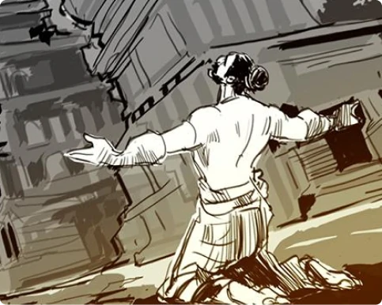
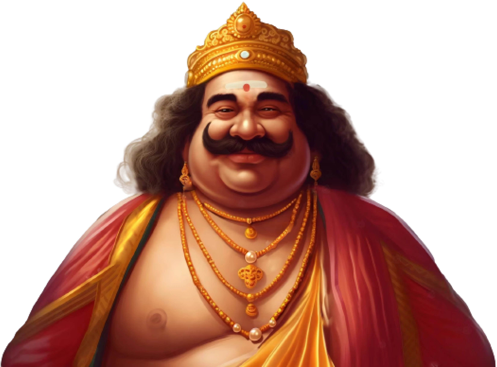
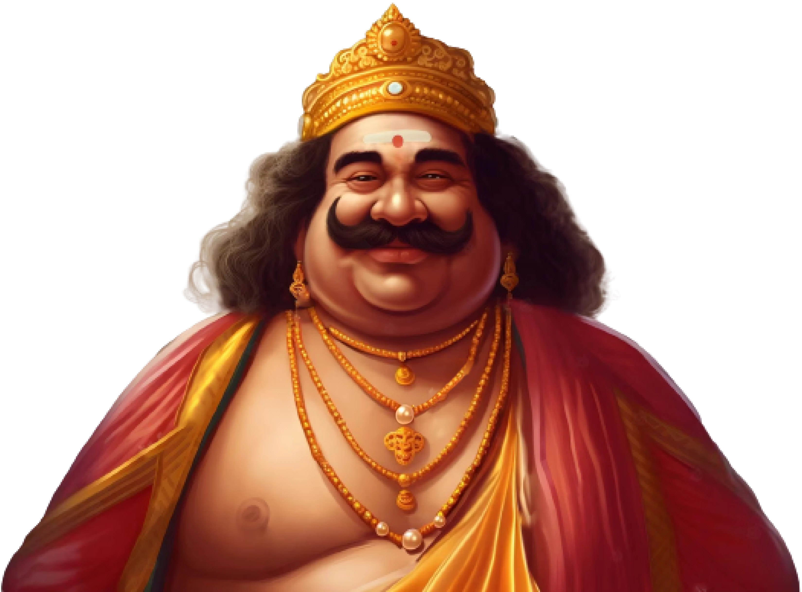

Mahabali was, thus, immune from death. After many wars, the invincible Bali had conquered heaven and earth. The suras (devas) approached Vishnu to save them from complete obliteration. Vishnu refused to join the war, or outright kill his own devotee Mahabali. To restore the natural order, he incarnated as the dwarf Brahmin avatar, Vamana. While Mahabali was performing the ashvamedha sacrifice to celebrate his victories and giving away gifts to everyone, Vamana approached him and requested "three steps of land".  Mahabali granted him this gift, despite warnings from Shukra, who had realised Vamana's true identity. Vamana then metamorphosed into Vishnu's colossal trivikrama form, the first foot encompassing all of heaven in one step and the earth with the second foot. When rhetorically asked where he might take his promised third step, Mahabali accepted his fate and offered his own head. Some Hindu texts state that Mahabali was banished to patala. , some state he was dragged there by Garuda, in others he entered heaven with the touch of Vishnu, while another version states he became Chiranjivi. Others even have Bali admitted into Vaikunta, which was an even higher place than the realm of the devas.According to Hindu mythology, Vishnu granted Bali a boon whereby he could return back to his homeland once every year. The harvest festivals of Balipratipada and Onam are celebrated to mark his yearly homecoming.
 

Mahabali (IAST: Mahābalī), also known as Bali, Indrasenan, or Māveli, is a daitya king featured in Hinduism. He is the grandson of Prahlada, and a descendant of the sage Kashyapa.
Legend has it that Mahabali, the mythical beloved king of Kerala, visits his subjects on the day of Thiruvonam after ascending from the netherworld.